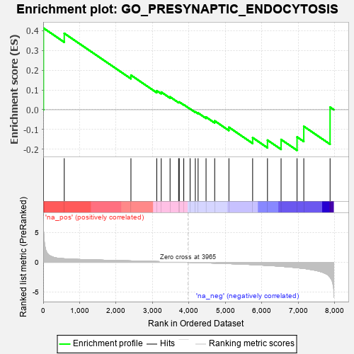
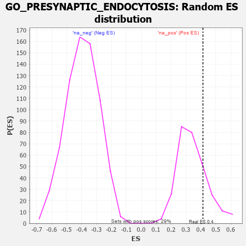

| | | Dataset | 7d |
| Phenotype | NoPhenotypeAvailable |
| Upregulated in class | na_pos |
| GeneSet | GO_PRESYNAPTIC_ENDOCYTOSIS |
| Enrichment Score (ES) | 0.4134996 |
| Normalized Enrichment Score (NES) | 1.2020359 |
| Nominal p-value | 0.22945206 |
| FDR q-value | 0.48195925 |
| FWER p-Value | 1.0 |
Table: GSEA Results Summary

Fig 1: Enrichment plot: GO_PRESYNAPTIC_ENDOCYTOSIS
Profile of the Running ES Score & Positions of GeneSet Members on the Rank Ordered List
| PROBE | GENE SYMBOL | GENE_TITLE | RANK IN GENE LIST | RANK METRIC SCORE | RUNNING ES | CORE ENRICHMENT | | 1 | SYT2 | | | 8 | 5.577 | 0.4135 | Yes |
| 2 | MX1 | | | 578 | 0.604 | 0.3868 | No |
| 3 | BTBD9 | | | 2407 | 0.245 | 0.1751 | No |
| 4 | SYT8 | | | 3115 | 0.135 | 0.0962 | No |
| 5 | FCHO2 | | | 3238 | 0.115 | 0.0894 | No |
| 6 | CDK5 | | | 3480 | 0.080 | 0.0650 | No |
| 7 | AMPH | | | 3715 | 0.040 | 0.0386 | No |
| 8 | SYT11 | | | 3732 | 0.036 | 0.0393 | No |
| 9 | DGKQ | | | 3856 | 0.020 | 0.0253 | No |
| 10 | TOR1A | | | 4030 | -0.013 | 0.0045 | No |
| 11 | SYNJ1 | | | 4173 | -0.038 | -0.0106 | No |
| 12 | GAK | | | 4249 | -0.050 | -0.0163 | No |
| 13 | LRRK2 | | | 4467 | -0.087 | -0.0371 | No |
| 14 | ARF6 | | | 4704 | -0.140 | -0.0564 | No |
| 15 | ITSN1 | | | 5094 | -0.222 | -0.0888 | No |
| 16 | MX2 | | | 5745 | -0.390 | -0.1416 | No |
| 17 | ROCK1 | | | 6152 | -0.520 | -0.1540 | No |
| 18 | VAMP2 | | | 6525 | -0.672 | -0.1508 | No |
| 19 | DNM1L | | | 6963 | -0.913 | -0.1379 | No |
| 20 | SYT1 | | | 7148 | -1.033 | -0.0843 | No |
| 21 | CALM3 | | | 7869 | -2.525 | 0.0128 | No |
Table: GSEA details [plain text format]

Fig 2: GO_PRESYNAPTIC_ENDOCYTOSIS: Random ES distribution
Gene set null distribution of ES for GO_PRESYNAPTIC_ENDOCYTOSIS